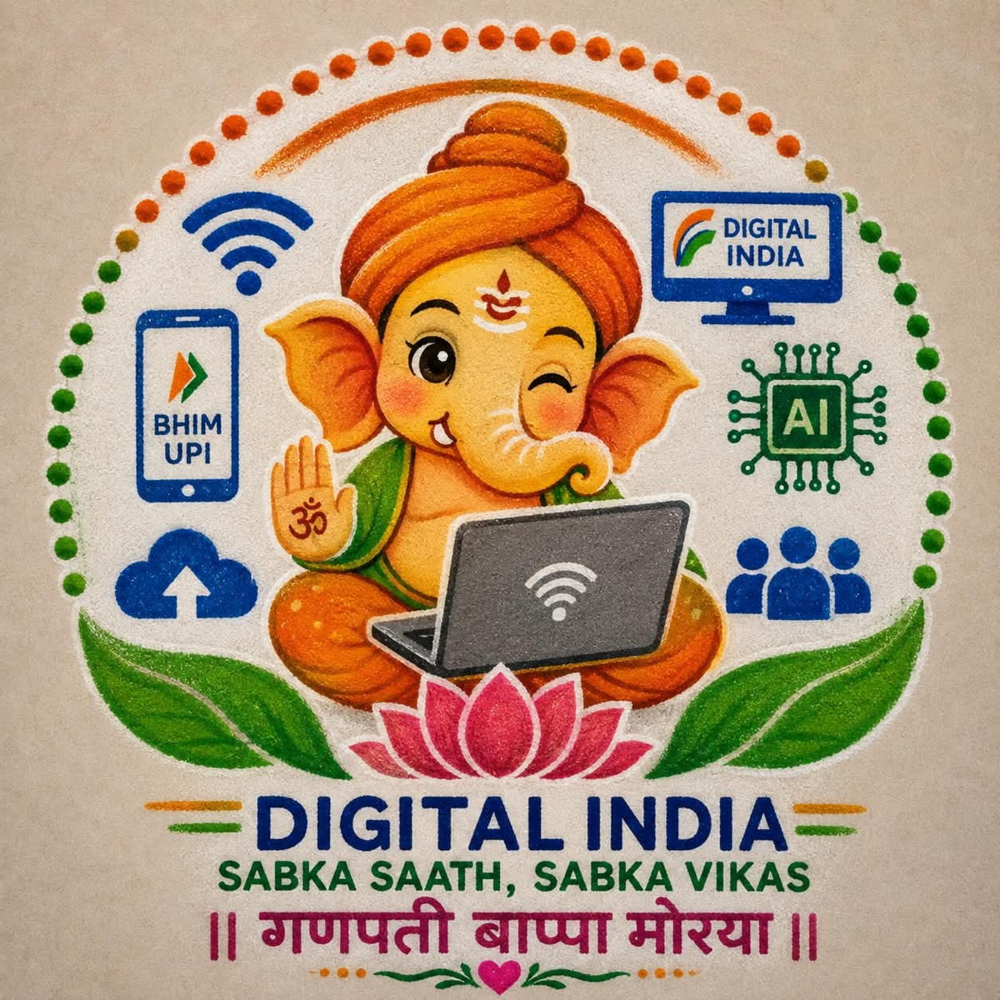

॥ वक्रतुण्ड महाकाय सूर्यकोटि समप्रभ ॥
॥ निर्विघ्नं कुरु मे देव शुभकार्येषु सर्वदा ॥

From a country that once stood in queues for payments and paperwork, to a country where one phone becomes a bank, an identity, a document wallet, a classroom, a marketplace and a gateway to government services — India is building a digital ecosystem designed around its citizens.
Instant bank-to-bank payments, 24×7, through a phone number or a QR code — for person-to-person transfers and for merchants.
npci.org.in → 🪪A digital identity that has become a foundation of India's digital public infrastructure and of access to services.
uidai.gov.in → 📄Authentic digital documents — education, health, transport, skills — issued, stored and shared with your consent. No folder of certificates.
digilocker.gov.in → 🛍️An open network connecting buyers, sellers and logistics across digital commerce, instead of shoppers being locked inside one app.
ondc.org → 🤖A national mission building compute, datasets, skills, research and startups — the move from a Digital India to an AI-powered one.
indiaai.gov.in → 🗣️The National Language Translation Mission — AI translation and speech so digital services work in the languages India actually speaks.
bhashini.gov.in → 🌐Broadband infrastructure carrying connectivity to gram panchayats. A digital India cannot stop at the edge of the cities.
bbnl.nic.in → 🏛️Certificates, licences, filings, welfare schemes — public services delivered online instead of across a counter.
services.india.gov.in →Digital India is what happens when the two are put in the same frame. Our traditions tell us where we came from; technology lets us decide where we go next.
“भारत बदल रहा है —
पर अपनी जड़ों को साथ लेकर।”A digital India is not an India that forgets its traditions.संस्कृति + तकनीकपरंपरा + नवाचारज्ञान + AIभारत + भविष्य